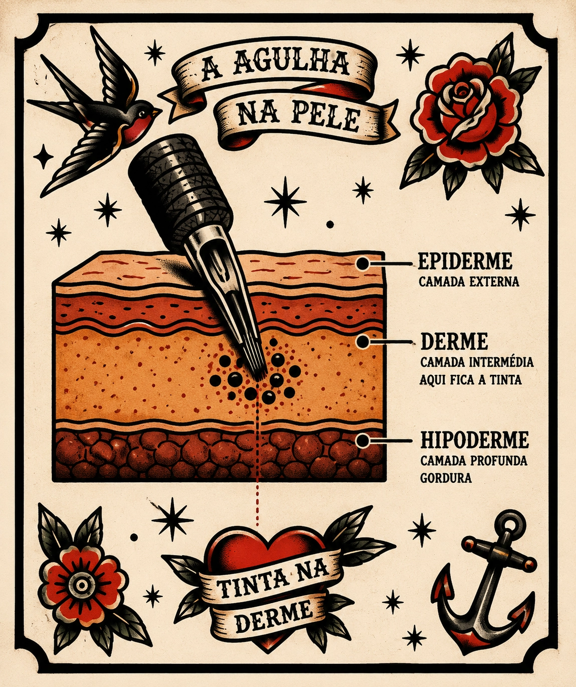
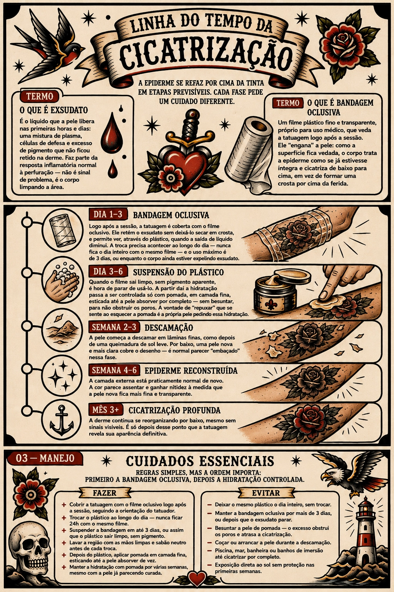
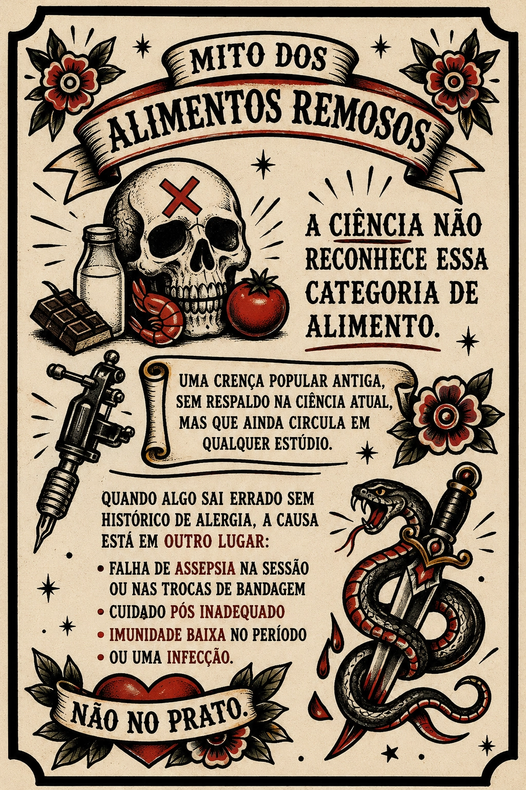
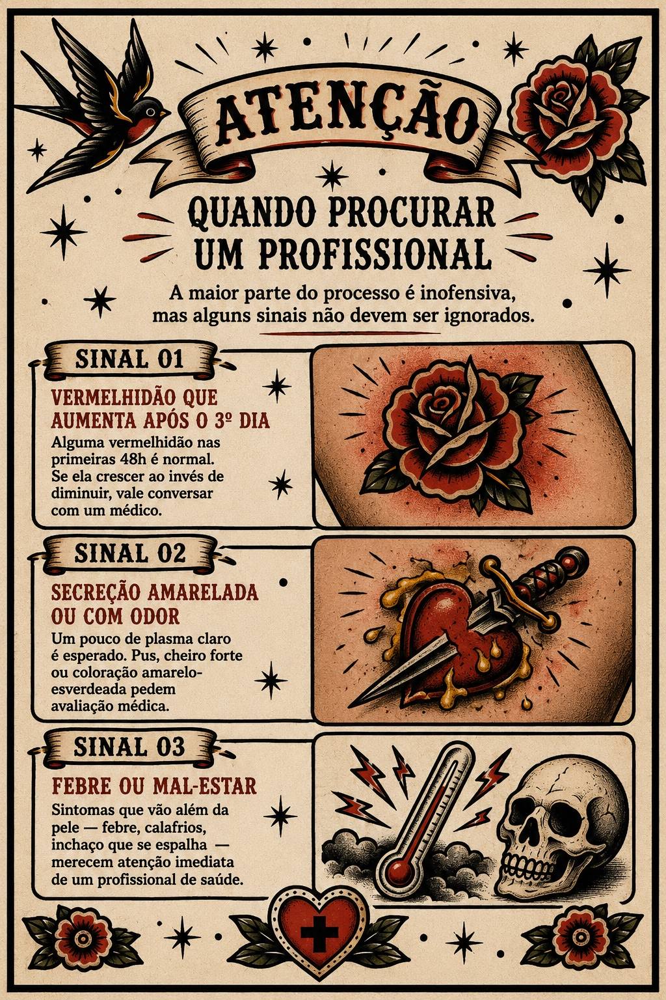

Entenda o que acontece embaixo da agulha e por que os primeiros 30 dias decidem como sua tatuagem vai envelhecer.
A agulha faz de 50 a 3.000 perfurações por minuto, sempre mirando a mesma profundidade.
Camada mais externa, sem vasos sanguíneos. Suas células se renovam a cada poucas semanas, por isso um arranhão superficial na pele some sozinho, sem deixar marca.
A espessura da epiderme varia de 1 mm na pálpebra a 3–4 mm na sola dos pés. A espessura média ao longo do corpo é 2 mm. Áreas de transição entre espessuras, normalmente nas juntas do corpo, podem sofrer variações de cicatrização e de traço devido ao movimento e à espessura variável da pele.
É aqui que a agulha deposita o pigmento. A derme tem vasos sanguíneos e colágeno, mas suas células não se substituem como as da epiderme, por isso a tinta fica fixada nesse ponto por décadas.
Camada de gordura e tecido conjuntivo. A agulha não deveria chegar até aqui. Se isso acontece, o traço tende a "espalhar" e perder nitidez com o tempo.

A epiderme se refaz por cima da tinta em etapas previsíveis. Cada fase pede um cuidado diferente.

↑ versão ilustrada · detalhes completos logo abaixo
É o líquido que a pele libera nas primeiras horas e dias: uma mistura de plasma, células de defesa e excesso de pigmento que não ficou retido na derme. Faz parte da resposta inflamatória normal à perfuração: não é sinal de problema, é o corpo limpando a área.
Um filme plástico fino e transparente, próprio para uso médico, que veda a tatuagem logo após a sessão. Ele "engana" a pele: como a superfície fica vedada, o corpo trata a epiderme como se já estivesse íntegra e cicatriza de baixo para cima, em vez de formar uma crosta por cima da ferida.
Logo após a sessão, a tatuagem é coberta com o filme oclusivo. Ele retém o exsudato sem deixá-lo secar em crosta, e permite ver, através do plástico, quando a saída de líquido diminui. A troca precisa acontecer ao longo do dia (nunca fica o dia inteiro com o mesmo filme) e o uso máximo é de 3 dias, ou enquanto o corpo ainda estiver expelindo exsudato.
Quando o filme sai limpo, sem pigmento aparente, é hora de parar de usá-lo. A partir daí a hidratação passa a ser controlada só com pomada, em camada fina, esticada até a pele absorver por completo, sem besuntar, para não obstruir os poros. A vontade de "repuxar" que se sente ao esquecer a pomada é a própria pele pedindo essa hidratação.
A pele começa a descamar em lâminas finas, como depois de uma queimadura de sol leve. Por baixo, uma pele nova e mais clara cobre o desenho. É normal parecer "embaçado" nessa fase.
A camada externa está praticamente normal de novo. A cor parece assentar e ganhar nitidez à medida que a pele nova fica mais fina e transparente.
A derme continua se reorganizando por baixo, mesmo sem sinais visíveis. É só depois desse ponto que a tatuagem revela sua aparência definitiva.
Regras simples, mas a ordem importa: primeiro a bandagem oclusiva, depois a hidratação controlada.
ilustração completa na seção anterior ↑
Uma crença popular antiga, sem respaldo na ciência atual, mas que ainda circula em qualquer estúdio.
É comum ouvir que carne de porco, camarão, ovo ou outros alimentos "carregados" atrapalham a cicatrização da tatuagem. Essa ideia vem de um contexto sanitário antigo: quando a carne suína, mal armazenada e sem refrigeração adequada, realmente causava mais infecções alimentares. Hoje, com controle sanitário moderno, essa restrição não tem mais base científica. A ciência atual não reconhece a categoria "alimento remoso": o que existe é reação alérgica individual, que aconteceria com ou sem tatuagem.

A restrição vem de uma época sem refrigeração confiável, quando a carne suína mal conservada causava infecções alimentares reais. Com a cadeia de frio e o controle sanitário de hoje, isso não representa risco a mais para quem está cicatrizando.
Não existe essa categoria de alimento reconhecida pela ciência. Se você nunca teve problema com uma comida antes, uma tatuagem recente não muda isso: o organismo reage do mesmo jeito, tatuado ou não.
Só reage quem tem alergia a camarão, e essa alergia se manifestaria em qualquer parte do corpo. Numa área recém-tatuada, a reação alérgica (pele empolada, inchada) pode expelir um pouco de pigmento junto, mas o gatilho é a alergia, não a tatuagem.
Quando algo sai errado sem histórico de alergia, a causa está em outro lugar: falha de assepsia na sessão ou nas trocas de bandagem, cuidado pós inadequado, imunidade baixa no período, ou uma infecção, não no prato.
A maior parte do processo é inofensiva, mas alguns sinais não devem ser ignorados.

Alguma vermelhidão nas primeiras 48h é normal. Se ela crescer ao invés de diminuir, vale conversar com um médico.
Um pouco de plasma claro é esperado. Pus, cheiro forte ou coloração amarelo-esverdeada pedem avaliação médica.
Sintomas que vão além da pele (febre, calafrios, inchaço que se espalha) merecem atenção imediata de um profissional de saúde.